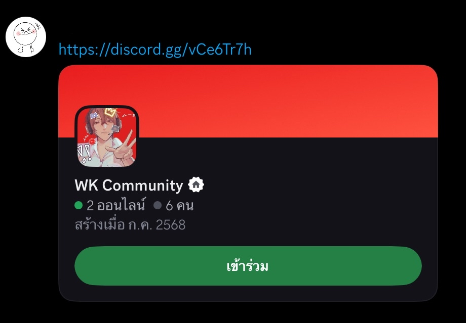
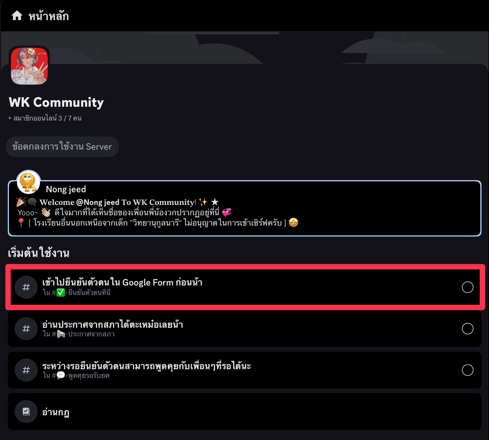
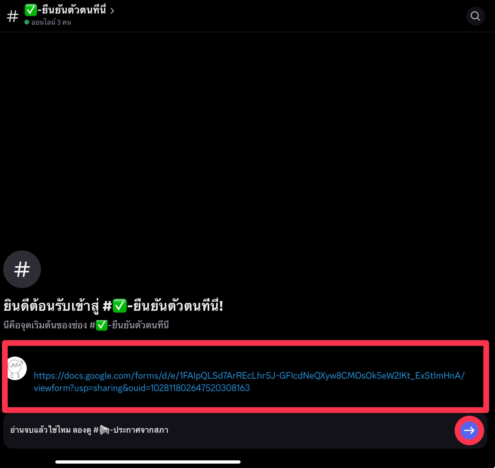
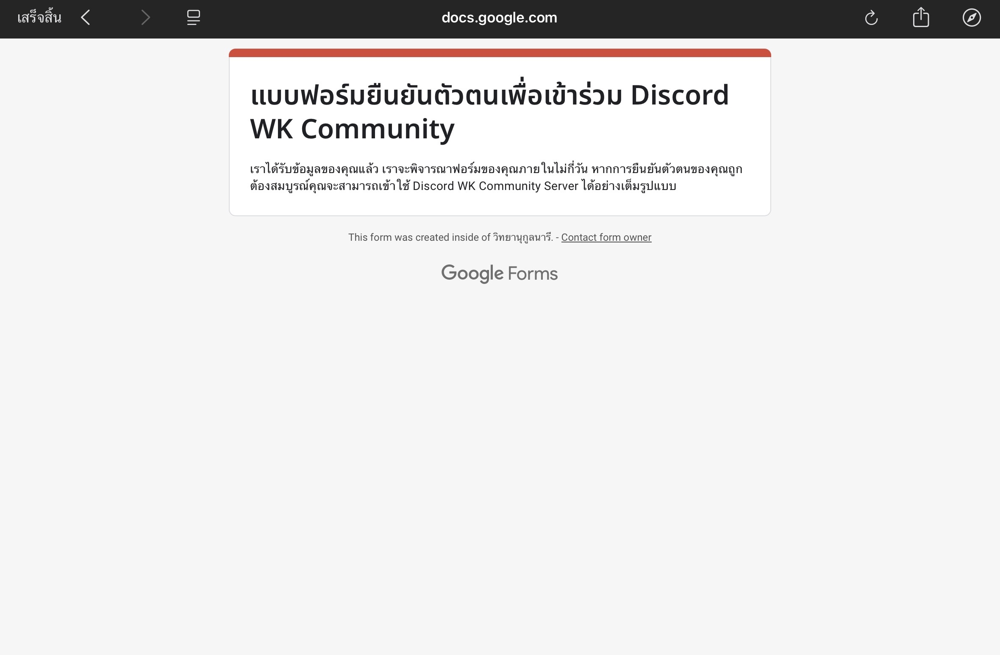
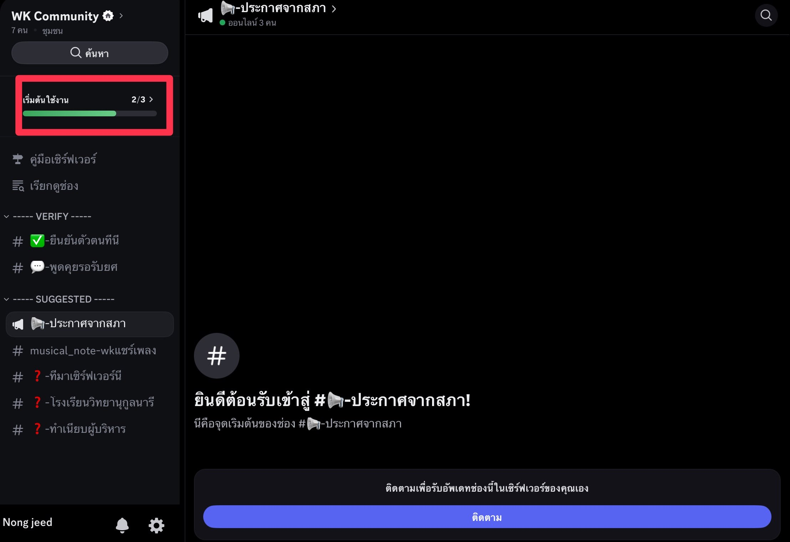
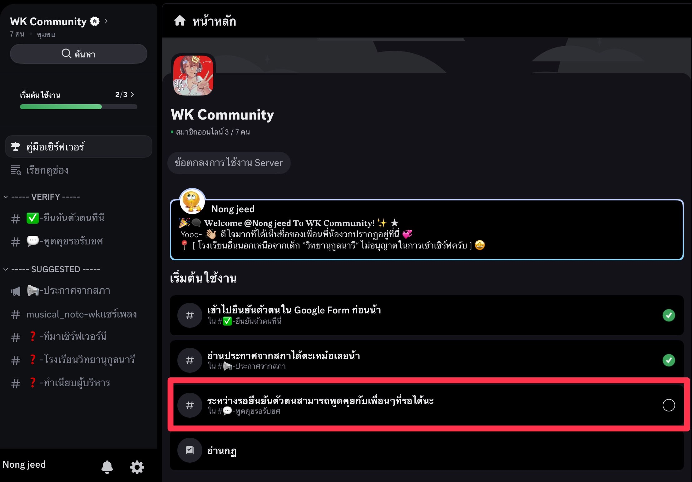
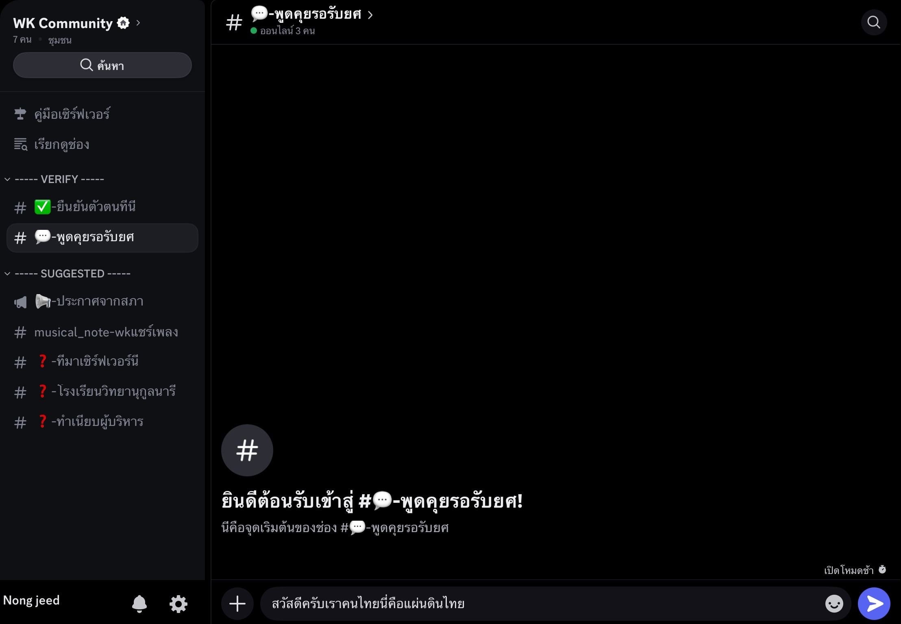

สวัสดีพี่ๆน้องๆชาววิทยานุกูลนารี วันนี้พี่สภาจะมาสอนการเข้าร่วม Discord กันนะครับ ขั้นตอนมีดังนี้ครับโผ้ม เตรียมพ็อปคอร์นและอินเทอร์เน็ตให้พร้อมนะจ๊ะ มาๆแลวิธี Derrr
1.น้องๆมีลิงก์เชิญหรือยังน้าาาา พอดีพี่มีแล้ว พี่ไม่ให้หรอก 😏 หยอกเล่นอะนี่ๆ ลิงก์เชิญ

2.พอกดเข้าเซิร์ฟเวอร์แล้ว ให้น้องๆไปดูช่องยืนยันตัวตนแล้วไปส่งแบบฟอร์มให้เรียบร้อย จากนั้นให้น้องกลับมากดที่ลูกศรและทำตามขั้นตอนใน Discord จนเสร็จสิ้น


2.1.ขึ้นแบบนี้ถือว่ากรอกฟอร์มเรียบร้อยแล้วนร้าาา

3.ถ้าน้องๆกดลูกศรสีฟ้าจากขั้นตอนที่ 2 แล้วขึ้นหน้าแบบนี้ แล้วไปต่อไม่ได้ ไม่ต้องตกใจ ให้น้องๆมากดที่มุมตรงนี้แล้วทำตามขั้นตอนจนเสร็จสิ้น


Surprise คร้าบคุณแม่เสร็จแล้วววว🎉🎉 ทีนี้ระหว่างรอรับยศก็สามารถมาคุยที่ช่องแชท "รอรับยศ" กับเพื่อนๆที่รอด้วยกันได้น้าาา
